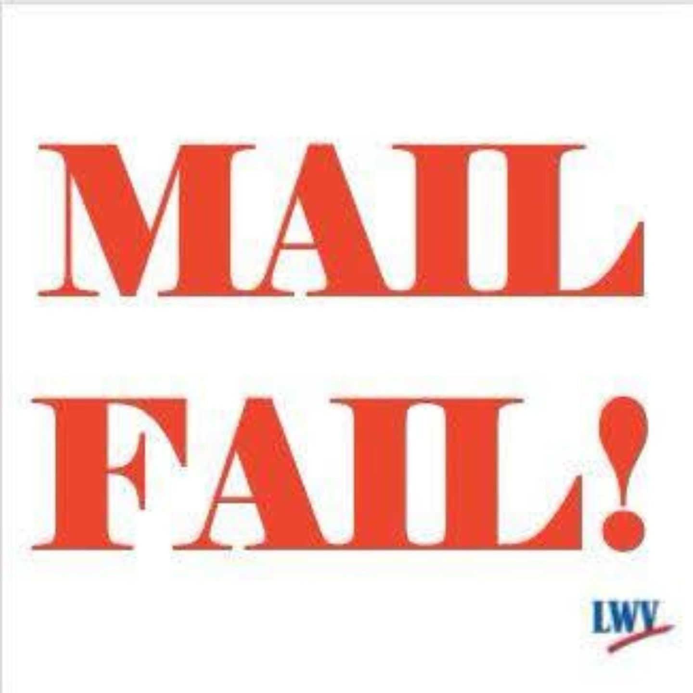

We Say No
Mail Ballots Belong to Voters — Not the USPS

The U.S. Postal Service has finalized a rule restricting the delivery of mail ballots. A federal court has blocked it — but if the Supreme Court lifts the injunction, the rule takes effect.
Either way, we say NO. Mail ballots belong to voters, not the Postal Service. Millions of Americans — military families and voters overseas, older voters, rural voters, and people with disabilities — depend on the mail to cast their ballots.
On August 11, 2026, a federal district court in Boston granted a preliminary injunction blocking the Postal Service from implementing Section 3 of the executive order restricting mail voting — through the November 3 midterm elections and any earlier federal election. The court held that "the executive branch has no authority to regulate elections." The League of Women Voters and the League of Women Voters of Massachusetts were among the plaintiffs, joined by the ACLU, the Legal Defense Fund, the Association of Americans Resident Overseas, U.S. Vote Foundation, OCA – Asian Pacific American Advocates, and Delta Sigma Theta Sorority, Inc.
That injunction is a victory, but it is not the end of the story. The case can still reach the Supreme Court, and the finalized rule is waiting behind it.
What You Can Do
- Have a plan to vote. If you vote by mail, request your ballot early and return it as early as you can — don't count on the last few days of delivery.
- Tell Senators Reed and Whitehouse that mail ballots belong to voters, not the USPS. Senator Jack Reed: (202) 224-4642 • Senator Sheldon Whitehouse: (202) 224-2921.
- Spread the word. Share this with anyone who votes by mail, especially military families, overseas voters, and neighbors who can't easily get to the polls.
Read the LWV Statement →
Voter Resources →
Take Action
The RI Voting Rights Act Did Not Pass — Keep Up the Pressure

The General Assembly ended its 2026 session without passing the Rhode Island Voting Rights Act (H 8334 / S 3143). Both chambers' committees voted to "hold the bills for further study" — the Senate Judiciary Committee on April 7 and the House State Government & Elections Committee on April 16 — so the RIVRA never received a floor vote.
The RIVRA would codify into state law the protections of the federal Voting Rights Act of 1965, which the U.S. Supreme Court has continually weakened. Codifying these protections in Rhode Island law shields voters here from any federal rollback of voting rights. The bill would protect Rhode Islanders from vote dilution, voter suppression, and voter intimidation, and from discrimination based on race or color, religion, sex, sexual orientation, gender identity or expression, disability, age, country of ancestral origin, or change in marital status.
Sponsors: Representative Katherine Kazarian (H 8334) and Senate President Valarie J. Lawson (S 3143).
The League of Women Voters of Rhode Island testified in strong support of the RIVRA, calling it "a common-sense, pro-voter bill that solidifies and builds upon the protections in the federal Voting Rights Act," and made the case in a letter to the editor in the Providence Journal. The League stands with a broad coalition of partners, including the ACLU of Rhode Island, Common Cause Rhode Island, and The Womxn Project, whose RIVRA campaign page tracks the bill's history and the full coalition.
Take Action!
The fight is not over. Write and call your state Senator and Representative: tell them you are disappointed the RIVRA was held in committee, and that you expect them to pass the Rhode Island Voting Rights Act when the General Assembly reconvenes. With the U.S. Supreme Court weakening the federal Voting Rights Act, states must lead — and Rhode Island should be among them.
Find Your State Legislators →
Update — Stay Engaged
Newport Hospital Birthing Center: Keep It Open — and Funded
Good news: On April 11, 2026, Brown University Health announced the Noreen Stonor Drexel Birthing Center at Newport Hospital will remain open. The fight isn't over. Keeping the center open requires $4.9 million in new annual state and philanthropic funding. Without it, closure remains on the table. The League of Women Voters of Newport County continues to advocate for sustained funding and legal protections, with attention to avoiding racial, economic, or geographic disparities in maternal care.
Key Actions to Take:
-
Contact Leadership: Thank Brown University Health for the commitment to keep the birthing center open, and urge sustained investment in its long-term future.
- John Fernandez (Brown University Health President & CEO)
- Sarah Frost (Chief of Hospital Operations, Brown University Health / President, Rhode Island Hospital)
- Mailing Address: Brown University Health, Office of the President, 593 Eddy Street, Providence, RI 02903
- Support Legislation: Advocate for Rep. Lauren Carson's maternal-health package introduced in January 2026 — including H 8203, which would require a rigorous RI Department of Health review before any birthing-center closure, relocation, or capacity cut of 25% or more, and H 7626, the Rhode Island Maternal Health Improvement and Equity Act of 2026.
- Contact Your State Legislators: Urge them to fund the Noreen Stonor Drexel Birthing Center in the FY2027 state budget.
Coalition
No Bridges to Birth!
The Coalition for Newport Hospital Birthing Center continues to rally under the banner "No Bridges to Birth!" — highlighting the unacceptable reality that island and East Bay families would face if forced to cross bridges in labor to reach a hospital. Join the coalition and stand with Newport County families to keep the Noreen Stonor Drexel Birthing Center open, funded, and accessible.
Urgent Action Needed
The SAVE Act Still Has the Potential of Becoming Law
There is still the threat that the SAVE Act may become law. The original SAVE Act was introduced in 2024 — and the version moving through Congress in 2026 is a stricter attempt at controlling voting rights (see the comparison below). On February 11, 2026, the U.S. House passed the SAVE America Act, 218–213, as an amendment to S. 1383.
In passing it, the House also incentivized states to adopt parts of the SAVE Act. No state would be required to adopt the entire legislation, but states that adopt documentary proof-of-citizenship or photo-ID requirements would qualify for federal funding — the House set aside $10 billion for this purpose. For perspective, that $10 billion is nearly double everything Congress has allocated for election administration since 2002 combined. (Bipartisan Policy Center)
Although stalled in the Senate, there is still a chance of passage.
What can you do to make a difference in this ongoing saga? Help LWV US collect data on who could be affected by the SAVE Act by taking this short survey:
Take the LWV US Survey →
How Has the SAVE Act Become Stricter?
2024 SAVE Act vs. 2026 SAVE America Act — scroll the table sideways on a phone.
| Issue |
2024 SAVE Act |
2026 SAVE America Act |
| Basic purpose | Verify U.S. citizenship when registering to vote in federal elections | Verify citizenship and establish federal voter-ID requirements |
| New voter registration | Must provide documentary proof of U.S. citizenship | Same basic requirement |
| Already-registered voters | Not required to re-register solely because of the bill | Not automatically required to re-register, but existing registrations can be subject to citizenship verification / list maintenance |
| Photo ID for in-person voting | No federal requirement created | Required for federal elections — a major change |
| Absentee voting | No new federal photo-ID requirement | Photo ID / documentation requirements added |
| Federal photo ID standard | None | Yes |
| Government database checks | Yes — states could use federal/state databases to verify citizenship | Yes — expanded and continued verification mechanisms |
| Noncitizens on voter rolls | Requires states to identify/remove noncitizens | Same objective, with expanded verification mechanisms through the federal government |
| Citizen flagged by a database | Verification process applies | Verification process applies; potentially affects existing registrants |
| Alternative if a voter lacks citizenship documents | Yes | Yes |
| Passport accepted | Yes — but 146 million Americans do not have passports |
| Birth certificate + qualifying ID | Yes — but an estimated 21.3 million Americans cannot easily access their birth certificate |
| REAL ID indicating citizenship | Yes — but this is extremely rare. A Rhode Island REAL ID does NOT show citizenship. |
| Military documentation | Yes |
| Mail registration | Proof of citizenship required | Proof of citizenship required; implementation requirements are more extensive |
| Online registration | Proof of citizenship required | Proof of citizenship required |
Where Is the Senate in the Process?
Once the Senate is back in session on September 10, there are several ways the SAVE America Act could be passed and sent to the president for his signature. The three most likely pathways are marked ★; options 4 and 5 are considered unlikely.
| Pathway |
What happens |
Votes needed |
Key obstacle |
| ★ 1. Cloture (vote to stop the filibuster) + final passage | Senate gets 60 votes to end debate, then votes on the bill | 60, then 51 | Reaching 60 votes for cloture is possible but not likely |
| ★ 2. Reconciliation bill | Qualifying portions of the SAVE Act are included in a budget-reconciliation bill | 51 | Provisions must comply with the Byrd Rule, which stops lawmakers from adding nonbudgetary policies. The Senate Parliamentarian can disqualify additions — a negative ruling effectively forces lawmakers to remove or alter the provision |
| ★ 3. Change or eliminate the filibuster | Senate changes its rules so legislation can advance without the normal 60-vote threshold | 51 | Requires all or nearly all Republicans to support the rule change — the so-called "nuclear option" |
| 4. Talking filibuster | Supporters keep the Senate in session and force opponents to maintain an actual, extended debate | Potentially 51 for final passage | Extremely demanding and politically difficult |
| 5. Attach it to another bill | SAVE provisions are added as an amendment to another piece of legislation | Depends on the vehicle | Ordinary legislation may still require 60 votes |
What You Need to Know About the SAVE America Act
- "Citizenship is already a requirement to vote, and instances of noncitizens voting are rare.
- Many eligible citizens don't have access to documentary proof of citizenship.
- There are better ways to verify citizenship that put the responsibility on the government, not the voters.
- The SAVE America Act could have unintended consequences for election officials and administration.
- The SAVE America Act is more restrictive with ID requirements than any state law currently in place.
- The SAVE Act needs more time, research, and resources to be implemented well."
— Bipartisan Policy Center
Who Would Most Likely Be Affected?
- Military members and their families, who must re-register each time they move
- Natural disaster survivors who have lost important documents
- Anyone with a changed name — married women and members of the trans community. An estimated 69 million women and 4 million men lack paperwork that reflects their current name
- The elderly and young people
- The unhoused and poor
- Naturalized citizens and Native American voters
- People of color and citizens living in rural areas
Take Action
Call Senators Reed and Whitehouse. Ask them to vote NO on the SAVE America Act when it reaches the Senate floor — and take the LWV US survey so the League can document who would be affected.
- Senator Jack Reed: (202) 224-4642 (DC) • (401) 528-5200 (Providence)
- Senator Sheldon Whitehouse: (202) 224-2921 (DC) • (401) 453-5294 (Providence)
Find Your Representatives →
Sources: Bipartisan Policy Center and the League of Women Voters US. All information on this alert has been fact-checked through the Brennan Center for Justice.
Want to Stay Informed?
Follow us on Facebook for the latest news and updates
Follow on Facebook
Get Involved
Want to help with our candidate forums, voter registration drives, or other activities? We're always looking for volunteers!
Volunteer Opportunities